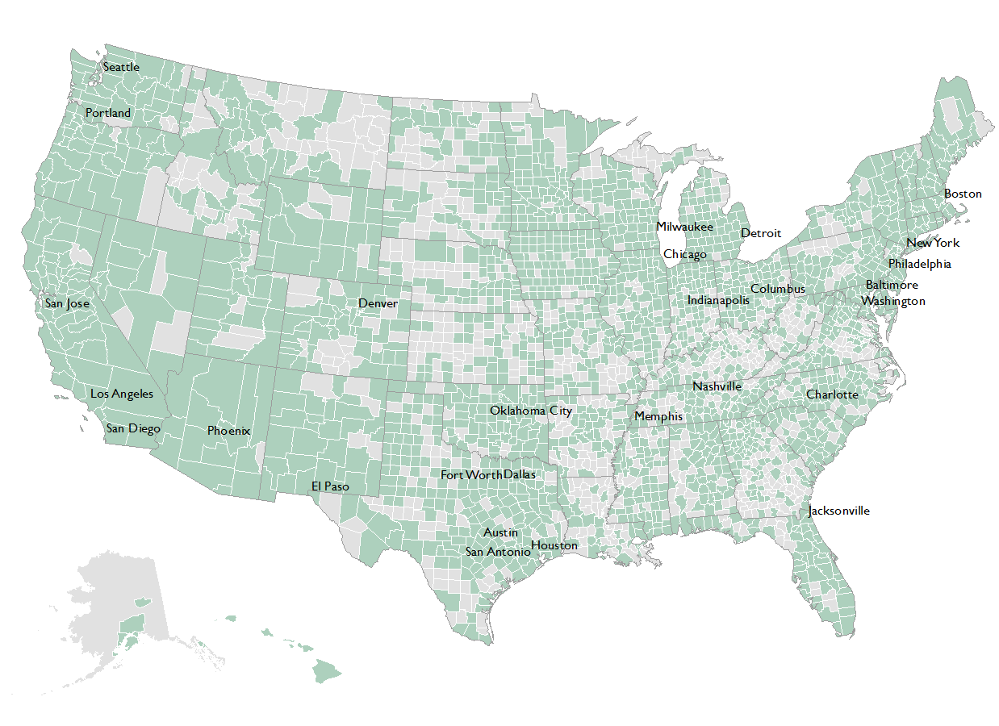
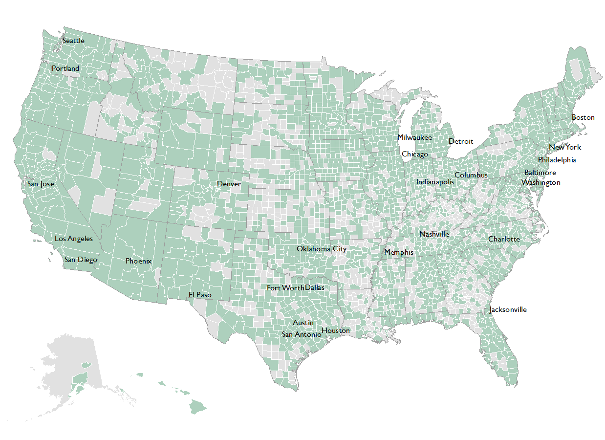
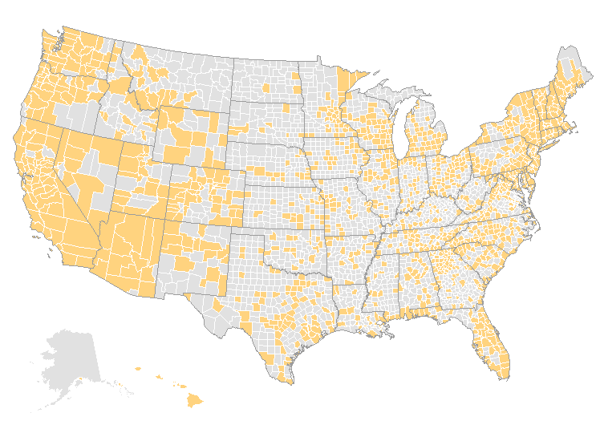
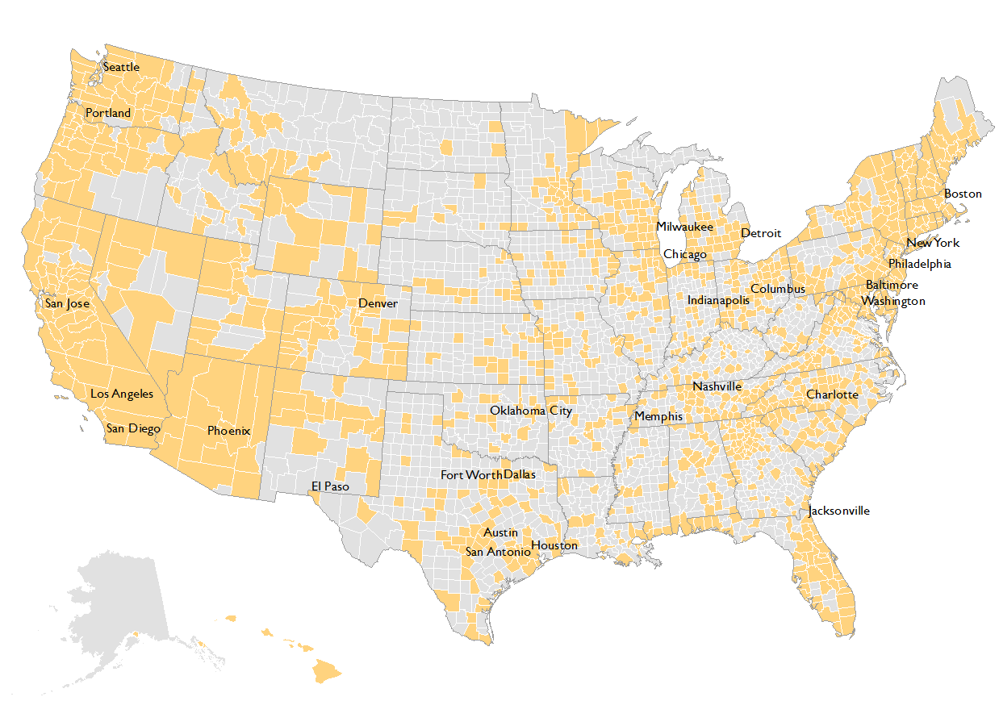
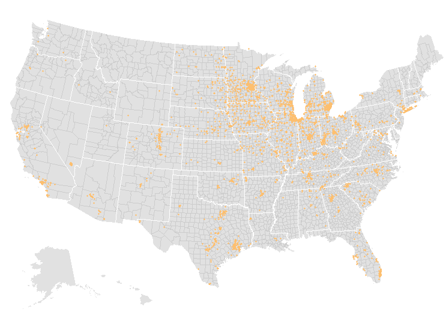
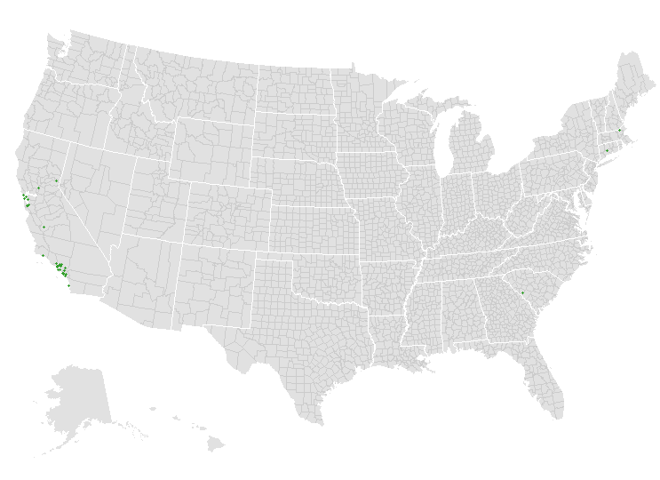
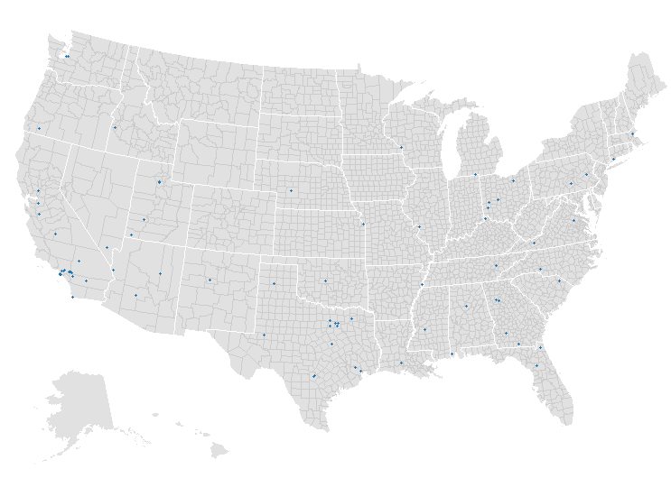
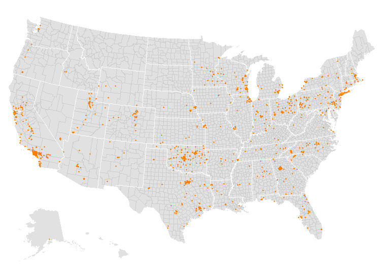

Counties with Alternative Fuel Stations
2,135 (of 3,142) have public stations
 

Counties with Electric Stations
1,290 (of 3,142) have public stations
 Biodiesel
209 public stations

Electric
15,527 public stations

Ethanol
2,832 public stations
Hydrogen
33 public stations
Liquified Natural Gas
76 public stations
Compressed Natural Gas
947 public stations
Propane
3,289 public stations